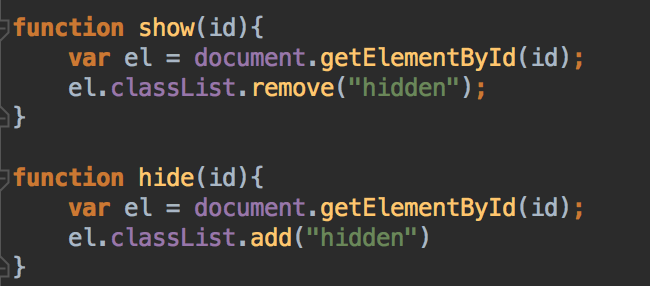
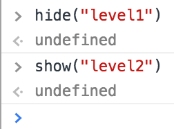
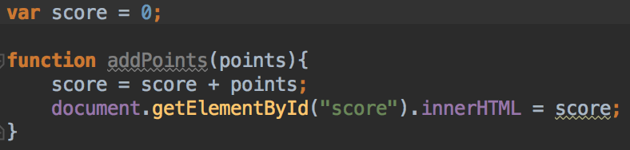
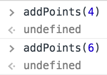

"How Many?" Game instructions
-
Verify that you are able to open the website on your lab computer. It should look a little bit like this:

-
Go to howmany.html. You will see 3 comments that say "Add a question here".
Replace these comments with questions about the picture.
- The first question should be about a string e.g. "What are these?"
- The second question should be about a number e.g. "How many planes are there".
- The third question should be abougt a boolean e.g. "Is this a town true/false?
When you're done. Reload the page and verify that your questions are showing up.
-
Right now all of our images are visible, but we only want to show the user the question they're currently working on. Luckily we have a css class that hides things in howmany.css:

Add this css class to the div that contains level2 and the div that contains level3.

Reload the page and verify that only the first level is showing.
-
In the browser go to tools->dev tools. Then open the console. Next click the "answer button". You should see an error in the console "doLevel1" is not defined. This happens because we've set the button's onclick to a javascript function that doesn't exist yet:

We need to add a doLevel1() javascript function to our howmany.js file.
-
Open howmany.js and add a doLevel1() function. You should make it so that it writes a message to the console.
Now test out the answer button in the browser and make sure it writes your message to the console.
-
Good. Now would be a good time to add a doLevel2() and doLevel3() function to your javascript as well.
-
When the user finishes level1, we're going to want to hide level 1 and show level2. Likewise when the user finishes level2 and starts level3 we'll need to do the same. Add these two functions to your program:

The show() function takes an element id string, finds that element, and removes the 'hidden' css class from it.
The hide() function takes an element id string, finds that element, and adds the 'hidden' css class to it.
-
You should be able to test out show and hide by using the console to hide('level1') and show('level2'):

Once you've tested things out, go on to the next step.
-
Really we'll want to to show and hide the levels after the user gives an answer. Remember that the doLevel1() function runs when you hit the answer button on level1. Likewise the doLevel2() function runs when you hit the answer button on level2() and the doLevel3() function runs when you hit the answer button on level3.
- Add calls to hide and show to your doLevel1() function so that level1 gets hidden and level2 is shown.
- Add calls to hide and show to your doLevel2() function so that level2 gets hidden and level3 is shown
- Add a call to hide in your doLevel3() function so that level3() gets hidden when the user is done with the game
-
Once you've completed the previous step, test your game in the browser. Should should be able to cycle through the levels by clicking the answer button.
-
We'll need some javascript code that updates the number of points the user has. Add this code:

-
Call this function from the console to test it out. You should see the score on the upper left side of the screen change:

-
Now that we have our levels setup and a way to keep score. We can start implementing the game play for each level. Level 1 should:
- Prompt the user to enter their answer and store it in a variable
- If the user entered the right answer, tell alert() "Congratulations you got it right". Call addPoints() to give them 10 points
- else, alert() alert the user "Sorry the answer was [answer]"
- hide level 1
- show level 2
Test out level one in the browser. Test out both if the user gets it right or if the user gets it wrong.
-
Level 2 should:
- Prompt the user to enter their answer and store it in a variable
- Convert that answer from a string to a Number using Number()
- If the user entered the right answer, alert() them, and give them some points
- Otherwise tell the user what the right answer was
- hide level 2
- show level 3
Test out level 2 in the browser. Test out both if the user gets it right or if the user gets it wrong.
-
Level 3 should:
- Prompt the user to enter their answer and store it in a variable
- Convert that answer from a string to a Boolean using Boolean()
- If the user entered the right answer, alert() them, and give them some points
- Else tell them what the right answer was
- Hide level 3
- BONUS #1: If you get this far, try to add a final "Congratulations" screen that shows a celebratory picture and tells the user what their final score was
- BONUS #2 If you get this far, try adding more levels to your game